Dr. Alex Pereira Alves
Coluna vertebral, cirurgia minimamente invasiva e hérnias discais
Formado pela UFU em 2008. Especialista em Ortopedia e Traumatologia pelo MEC / Unicamp.
CRM-MG 47.102 · RQE 46.388
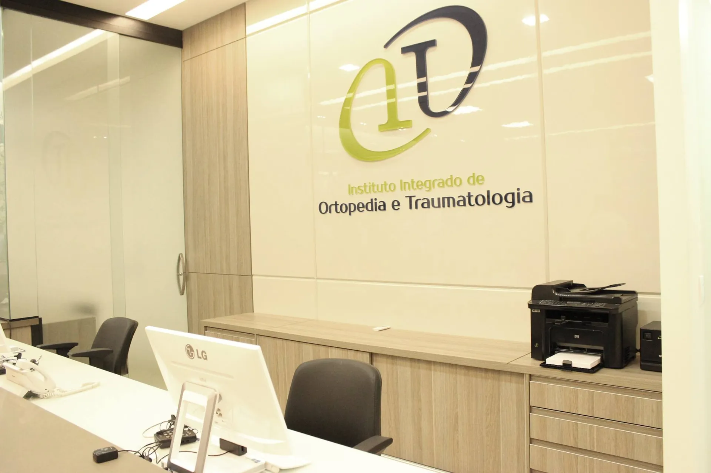
Seja qual for a sua dor, no Instituto Integrado de Ortopedia e Traumatologia você encontra um especialista para a sua necessidade, ou para a necessidade do seu filho.
Localizado no Complexo UMC, em Uberlândia, o IIOT reúne nove médicos com atuação em diferentes áreas da ortopedia e traumatologia, com praticidade, segurança e fácil acesso ao agendamento.
Escolha a região do corpo para conhecer os médicos com atuação nessa especialidade.
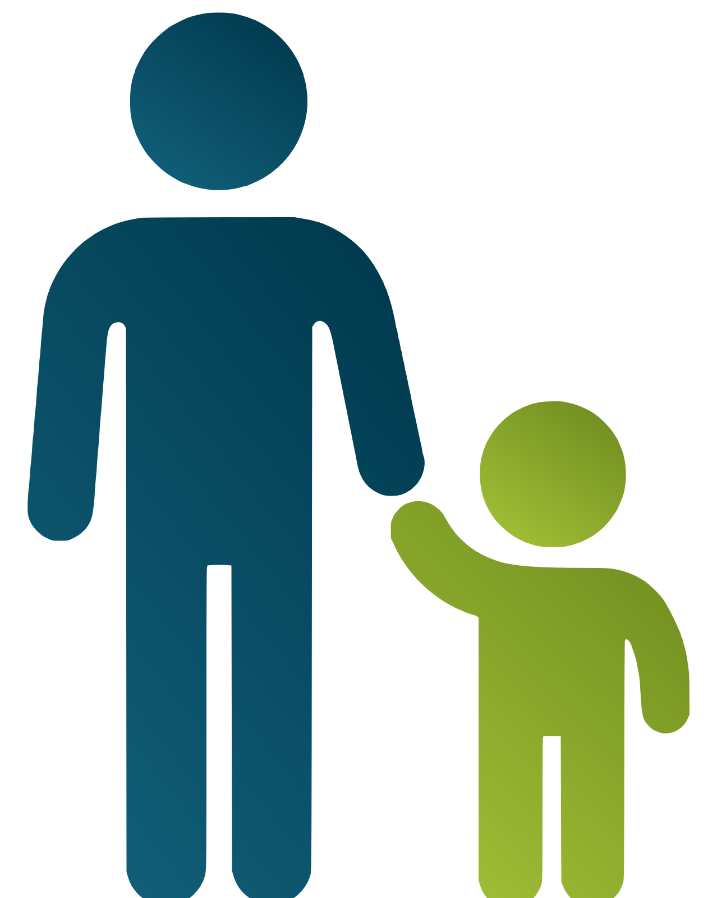
Ao escolher uma área, o corpo clínico abaixo mostra quem atende.
Conheça a equipe médica do instituto.
Coluna vertebral, cirurgia minimamente invasiva e hérnias discais
Formado pela UFU em 2008. Especialista em Ortopedia e Traumatologia pelo MEC / Unicamp.
CRM-MG 47.102 · RQE 46.388
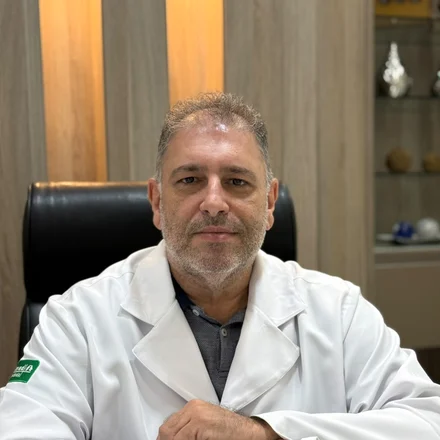
Trauma, cirurgia do tornozelo e pé
Formado pela UFU em 2000. Especialista em Ortopedia e Traumatologia pela UFU. Membro titular da SBOT.
CRM-MG 35.195 · RQE 11.323
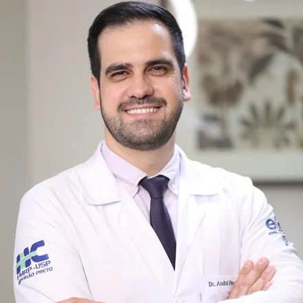
Cirurgia da coluna vertebral e cirurgia minimamente invasiva
Formado pela UFU. Especialista em Ortopedia e Traumatologia pela USP-RP, com subespecialização em cirurgia da coluna e cirurgia endoscópica da coluna. Membro da SBOT e da SBC.
CRM-MG 73.466 · RQE 57.712
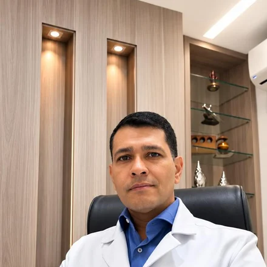
Ombro, cotovelo, mão, microcirurgia e artroscopia
Formado pela UFGD. Especialização em Ortopedia e Traumatologia pela UFU, com subespecialização em cirurgia do membro superior e microcirurgia pela UFU.
CRM-MG 46.931 · RQE 34.811
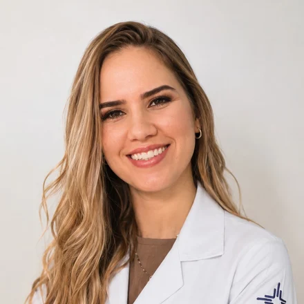
Ortopedia e traumatologia pediátrica
Formada pela UFCSPA. Especialista em Ortopedia e Traumatologia pela UFG, com subespecialização em Ortopedia Pediátrica pela UFU. Membro titular da SBOT e da SBOP.
CRM-MG 98.857 · RQE 62.759
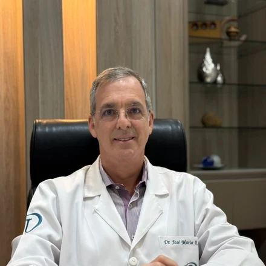
Ombro, cotovelo, mão, microcirurgia e artroscopia
Formado pela UFU em 1991. Doutor em Ortopedia pela FMRP-USP. Membro titular da SBOT.
CRM-MG 26.005 · RQE 23.846
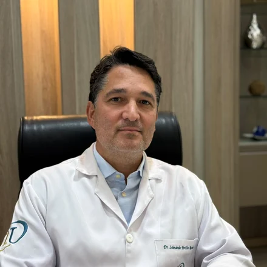
Trauma, cirurgia do joelho e artroscopia
Formado pela UFU em 2003. Especialista em Ortopedia e Traumatologia pela UFU. Membro titular da SBOT.
CRM-MG 40.255 · RQE 49.143
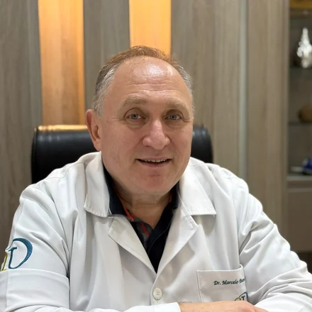
Trauma, tornozelo e pé, tumores musculoesqueléticos
Formado pela UFU em 1998. Membro da SBOT, da SBTO e da AOLAT / AOTrauma.
CRM-MG 32.868 · RQE 11.736
Trauma e patologias do quadril
Formado pela UFU. Especialista em Quadril pela Santa Casa de São Paulo. Responsável técnico do instituto.
CRM-MG 30.586 · RQE 31.828
Mostrando todo o corpo clínico.
O instituto nasceu da iniciativa de um grupo de médicos ortopedistas que compartilhava o propósito de atuar de forma integrada e colaborativa, reunindo diferentes subespecialidades para oferecer um atendimento mais completo, humanizado e direcionado às necessidades de cada paciente.
Nossa equipe realiza consultas, exames e procedimentos para pacientes de todas as idades, unindo sólido conhecimento científico, aprimoramento contínuo e recursos tecnológicos. Nossa missão é promover, com excelência e ética, a recuperação da saúde e da qualidade de vida, o pioneirismo tecnológico e a responsabilidade social e ambiental.
Buscamos consolidar o IIOT como um centro de referência em Ortopedia e Traumatologia no Triângulo Mineiro, Sul de Goiás e Alto Paranaíba.
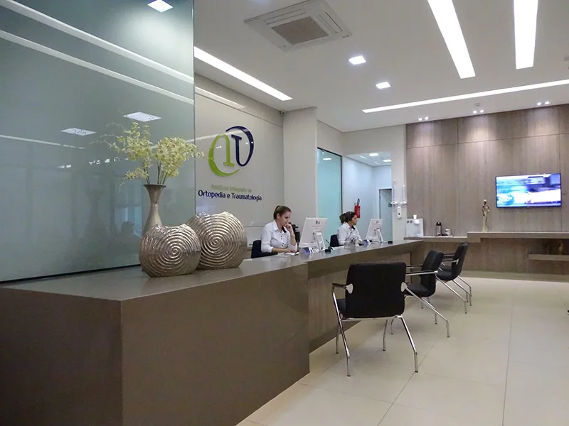
Se o seu plano não estiver na lista, fale com a recepção: a cobertura varia por médico.
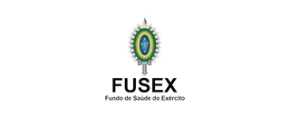
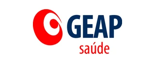
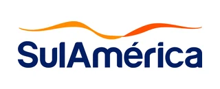
O instituto fica dentro do Complexo UMC, em Uberlândia. Siga o mapa interno para encontrar a clínica a partir da entrada principal.
Conteúdos sobre sintomas, prevenção, exames, procedimentos e tratamentos relacionados à saúde ortopédica.
Entenda quais sinais podem indicar a necessidade de uma avaliação médica.
Ler artigoConheça situações em que uma avaliação especializada pode ser recomendada.
Ler artigoSaiba quando o desconforto no joelho merece atenção médica.
Ler artigo[A PREENCHER] os três artigos ainda não foram escritos, e a área completa de conteúdo entra numa segunda etapa.
Conheça nossos especialistas e agende sua consulta de forma prática.
Em caso de dúvida sobre a especialidade ou o convênio, fale com a recepção.